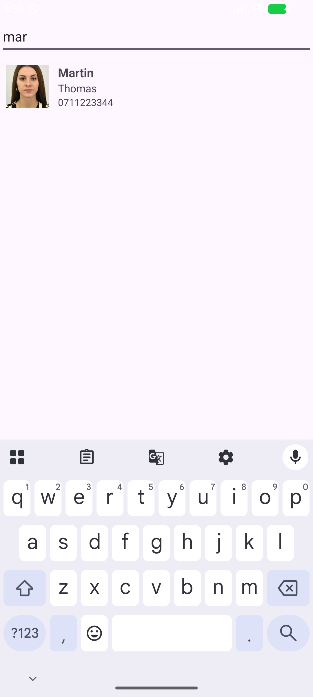
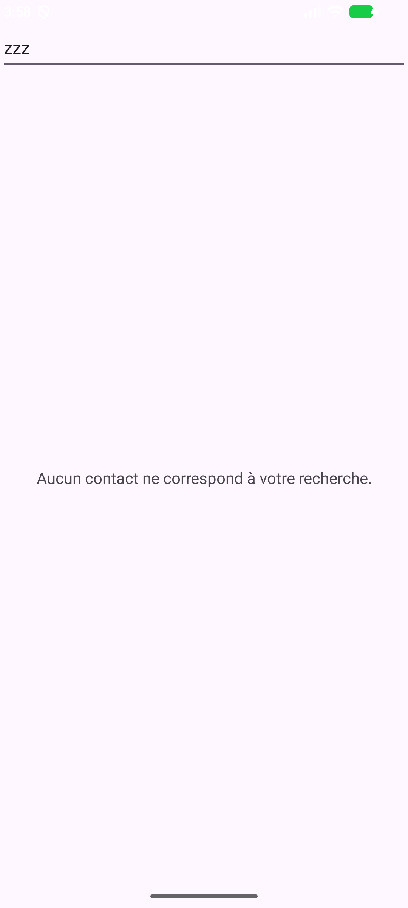
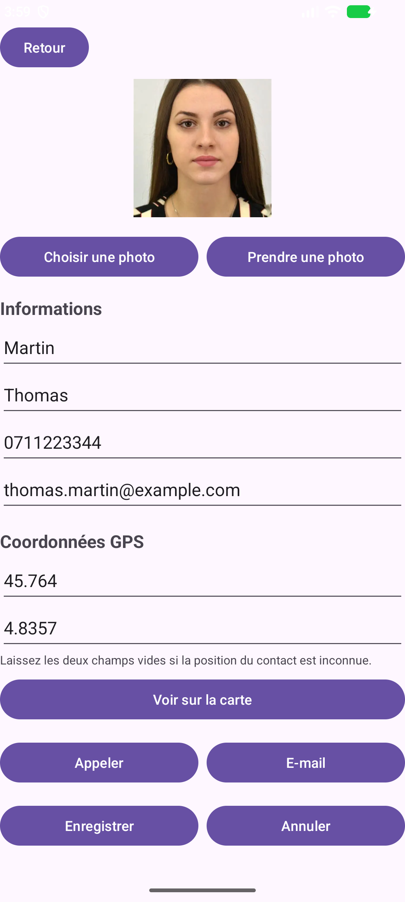
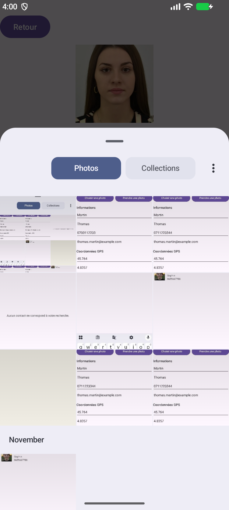
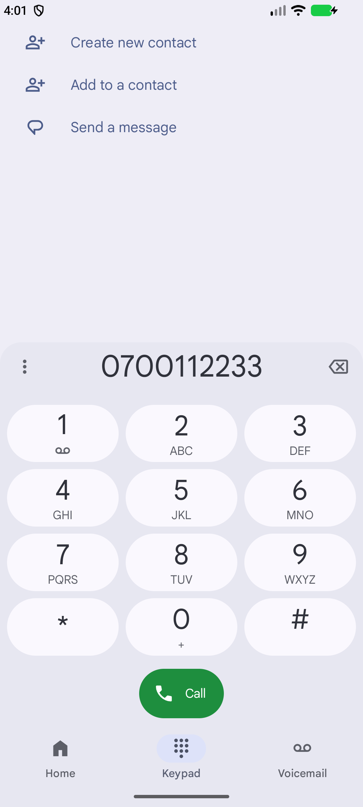
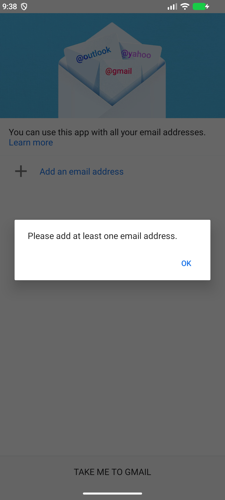

COMPTE RENDU
Fragments • RecyclerView • Filtrage • Google Maps
local.properties non versionné) et la capture « carte avec marqueur » (paragraphe 9). Supprimer ce cadre ensuite.
La version 3 fait évoluer l'application de gestion de contacts réalisée en V2. Elle conserve toutes les fonctionnalités précédentes et introduit : une architecture à une seule activité et plusieurs fragments dynamiques, une RecyclerView avec filtrage en temps réel, et l'affichage des coordonnées GPS des contacts sur Google Maps. Les compétences travaillées sont la navigation entre fragments, le passage de paramètres, la gestion du cycle de vie, les adapters RecyclerView, le filtrage de données, l'intégration du SDK Maps, les tests et la documentation.
Le projet est développé en Kotlin avec des interfaces XML, AndroidX Fragment et RecyclerView. Le stockage reste en mémoire (collection singleton), ce qui est explicitement autorisé par l'énoncé.
MainActivity est l'unique activité. Sa mise en page ne contient qu'un
FragmentContainerView (activity_main.xml) qui sert de conteneur à tous les écrans.
La navigation est réalisée manuellement avec FragmentManager / FragmentTransaction
(aucun composant Navigation) :
savedInstanceState == null), la liste est ajoutée par replace() ;openDetail(id) et openMap(id) remplacent le fragment courant et appellent addToBackStack() ;popBackStack().| Élément | Rôle principal |
|---|---|
ui/ContactsViewModel.kt | ViewModel partagé au niveau de l'activité ; expose la LiveData des contacts et la méthode update(). |
data/ContactRepository.kt | Collection en mémoire des contacts de démonstration, recherche par identifiant et mise à jour. |
model/Contact.kt | Modèle immuable : identifiant stable, nom, prénom, téléphone, e-mail, photo, latitude et longitude. |
ui/list/* | Liste filtrable et adapter RecyclerView. |
ui/detail/* | Fiche détaillée : édition, validation, photo, appel, e-mail, accès à la carte. |
ui/map/* | Fragment Google Maps : centrage, marqueur, messages d'absence. |
util/* | Fonctions pures testables : filtrage et validation des coordonnées. |
FragmentManager restaure les
fragments existants ; MainActivity.onCreate() ne crée donc pas une seconde liste. Le filtre de
recherche est sauvegardé dans onSaveInstanceState() et réappliqué après recréation de la vue.
Tests effectués : une seule RecyclerView et un seul EditText après rotation, filtre conservé.
Deux mécanismes étaient proposés par l'énoncé : le ViewModel partagé ou la Fragment Result API.
Le ViewModel partagé a été retenu (via activityViewModels()), pour les raisons suivantes :
LiveData rend cette mise à jour automatique, sans chaîne de callbacks ;
Seul l'identifiant du contact transitue dans le Bundle (putString("contactId", id)).
Le détail et la carte récupèrent l'objet complet dans le repository via cet identifiant. Ainsi, aucun objet volumineux
n'est sérialisé, et surtout aucun numéro de ligne n'est utilisé : cliquer sur un contact filtrée ne peut pas ouvrir
le mauvais contact.
La ListView de la V2 est remplacée par une RecyclerView avec un
LinearLayoutManager. L'adapter est un ListAdapter avec un DiffUtil.ItemCallback
comparant les contacts par identifiant et par contenu. Les identifiants stables
(setHasStableIds(true)) et le passage de l'objet Contact au clic garantissent qu'aucune
erreur d'indice ne survient après filtrage. Chaque ligne affiche la photo, le nom, le prénom et le téléphone
(item_contact.xml).
addTextChangedListener déclenche le filtrage à chaque frappe, sans bouton ;ContactFilter.filter() est une fonction pure : mise en minuscules avec Locale.ROOT,
recherche sur le nom, le prénom et le téléphone (les espaces du numéro sont ignorés) ;Contact possède latitude: Double? et longitude: Double? ;
deux contacts de démonstration ont des coordonnées valides, le troisième n'a aucune position ;CoordinateValidator
contrôle la plage −90..90 / −180..180, accepte la virgule décimale et refuse une paire incomplète ;
un message erroné est attaché au champ concerné et l'enregistrement est bloqué ;CarteContactFragment avec l'identifiant du contact ;SupportMapFragment est ajouté dynamiquement dans un FrameLayout et réutilisé
après rotation ; onMapReady() centre la caméra avec
CameraUpdateFactory.newLatLngZoom(position, 14f) et pose un marqueur dont le titre est le nom
complet du contact ;
La dépendance play-services-maps est ajoutée via le catalogue de versions Gradle. La clé est lue
depuis local.properties (fichier ignoré par Git), puis injectée dans le manifeste par un
manifestPlaceholders["MAPS_API_KEY"] et la balise
<meta-data android:name="com.google.android.geo.API_KEY" android:value="${MAPS_API_KEY}" />.
Le projet compile donc sans clé ; aucune clé ni identifiant privé n'est versionné. Une vérification
git log -S 'AIza' ne renvoie aucun résultat.
MAPS_API_KEY=... dans local.properties, activer l'API Maps sur un projet
Google Cloud et reconstruire l'application. Aucune autorisation de localisation n'est demandée : seules des
coordonnées déjà enregistrées sont affichées.
| Fonctionnalité | Implémentation |
|---|---|
| Modèle Contact (photo incluse) | Photo de ressource ou URI ; photo caméra enregistrée dans le cache avec FileProvider. |
| Liste et fiche détaillée | Liste en RecyclerView, fiche ouverte par identifiant. |
| Modification et enregistrement | viewModel.update() met à jour la LiveData ; retour automatique à la liste actualisée. |
| Appeler | Intent implicite ACTION_DIAL avec tel:, numéro prérempli. |
Intent implicite ACTION_SENDTO avec mailto:, adresse préremplie. | |
| Galerie et caméra | ActivityResultContracts.GetContent() et TakePicturePreview(), permission caméra demandée à la volée. |
| Annuler | popBackStack() sans écriture : les anciennes valeurs restent inchangées. |
| Champs obligatoires | Nom, prénom, téléphone et e-mail non vides ; erreurs affichées directement sous les champs. |
| Commande | Résultat |
|---|---|
.\gradlew.bat :app:assembleDebug | BUILD SUCCESSFUL — APK debug généré. |
.\gradlew.bat :app:testDebugUnitTest | 24 tests, 0 échec : ContactFilterTest (7), CoordinateValidatorTest (12), ContactTest (4), ExampleUnitTest (1). |
.\gradlew.bat :app:lintDebug | BUILD SUCCESSFUL ; 27 avertissements de style (aucune erreur bloquante). |
| Scénario | Résultat observé |
|---|---|
| Filtre « mar » | Seul Martin est affiché. |
| Effacement du filtre | Les trois contacts réapparaissent. |
| Filtre « zzz » | Message « Aucun contact ne correspond à votre recherche. » |
| Clic dans la liste filtrée | La fiche de Martin s'ouvre correctement. |
| Modification du téléphone | Nouvelle valeur affichée immédiatement dans la liste après Enregistrer. |
| Annuler après modification | Ancienne valeur conservée. |
| Rotation liste / détail / carte | Aucun doublon de fragment, filtre conservé, retour stable. |
| Retour depuis la carte | Retour à la fiche du même contact. |
| Coordonnées absentes | Toast dans le détail ; aucun fragment carte empilé. |
| Coordonnées 91 / 200 | Refusées avec message d'erreur, enregistrement bloqué. |
| Coordonnées 43.6047 / 1.4442 | Enregistrées ; écran carte ouvert avec la position. |
| Appeler | Composeur téléphonique ouvert avec le numéro prérempli. |
L'Intent ACTION_SENDTO est résolu vers Gmail. L'émulateur de test ne possède aucun compte configuré : Gmail demande d'en ajouter un avant d'afficher le composeur. | |
| Galerie | Sélecteur ouvert, photo choisie, validation « Done », retour à la fiche, enregistrement sans crash. |
| Caméra | Permission accordée, capture, validation « Done », JPEG enregistré dans cache/photos/, enregistrement sans crash. |
| Annulations diverses | Annuler le sélecteur, refuser la permission ou quitter un Intent : retour sain à l'application, aucun plantage (logcat AndroidRuntime vide). |
savedInstanceState == null et laisser le FragmentManager restaurer la pile.ListAdapter avec identifiants stables ; la position de la ligne n'est jamais
utilisée comme donnée.local.properties ignoré par Git et injection par
placeholder dans le manifeste ; l'application compile même sans clé et affiche un message explicite.FileProvider pour partager le fichier JPEG
créé dans le cache, et conservation de l'URI dans l'état du fragment pour survivre à une rotation.CoordinateValidator, testé
unitairement, avec gestion de la virgule décimale et des paires incomplètes.Captures obtenues sur l'émulateur de test. La capture « carte avec marqueur » devra être ajoutée après configuration d'une clé Google Maps valide (paragraphe 5).






La version 3 respecte l'ensemble des exigences fonctionnelles et techniques de l'énoncé : architecture à activité unique et fragments dynamiques, navigation avec pile de retour, RecyclerView filtrable, communication par identifiant et ViewModel partagé, coordonnées GPS validées et intégration Google Maps sécurisée. Les tests automatisés et les parcours manuels confirment le bon fonctionnement de l'application, y compris les cas d'annulation et la rotation de l'écran. Les seuls éléments restant à fournir sont externes au code : la clé API (non publiée), la capture du marqueur sur la carte, l'URL du dépôt GitHub et le dépôt dans Google Classroom.
addToBackStack() enregistre
la transaction pour que le bouton Retour ramène à l'écran précédent.findViewById()
répétés lors du défilement.local.properties ignoré par Git,
l'injecter via un placeholder de manifeste, ne jamais committer de fichier de secrets et vérifier l'historique
Git avant le rendu.